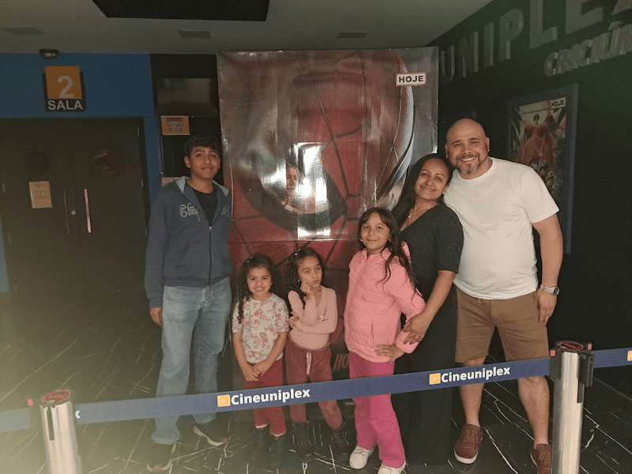

História
Nascida da paixão pela natureza e do amor em família.
A Trisec Wild Rafting surgiu do sonho de transformar um estilo de vida em profissão.
Acampar,
explorar cachoeiras, rios e praias sempre foi o programa favorito da nossa família —
o momento em
que nos desconectávamos da rotina para nos conectar com o essencial.

Decidimos unir essa paixão ao desejo de proporcionar experiências transformadoras
nas águas brancas.
O próprio nome Trisec homenageia os pilares dessa história, unindo as iniciais de
Thais, Rhavel,
Isabella, Sophia, Emily e Cecilia.
Aqui, tratamos cada expedição com o mesmo cuidado, segurança e entusiasmo com que
levamos nossos
próprios filhos para a natureza. Prepare o remo e venha viver o lado selvagem da
vida com a gente!